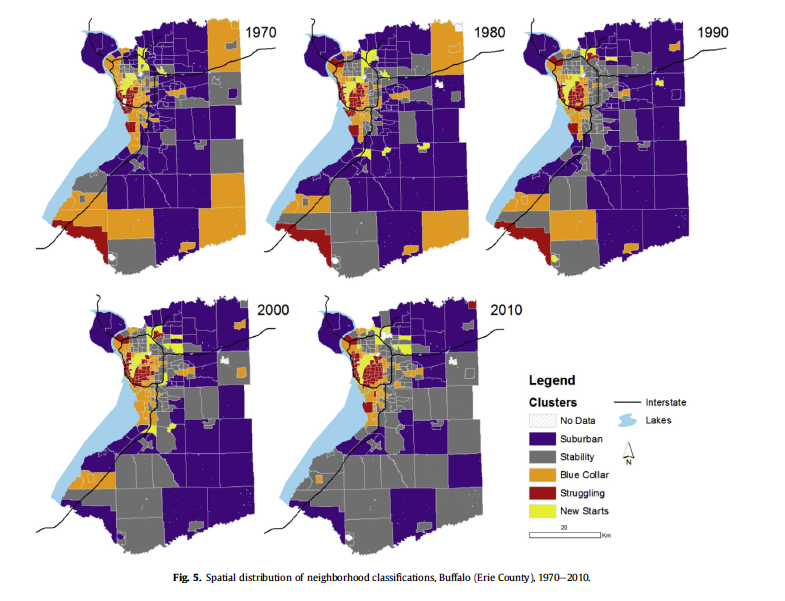
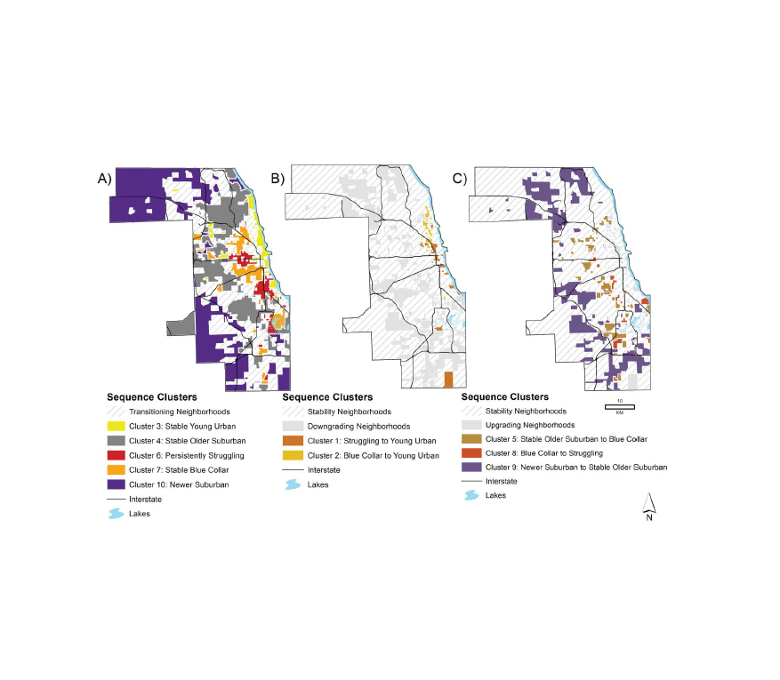
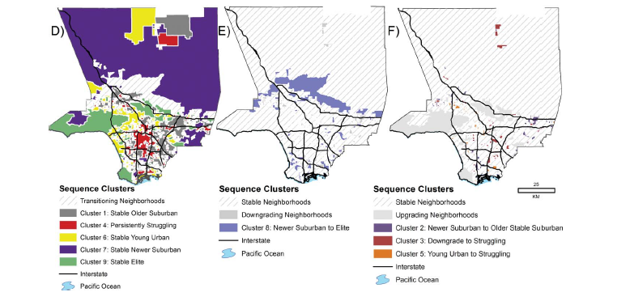
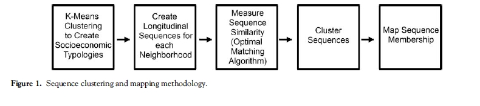
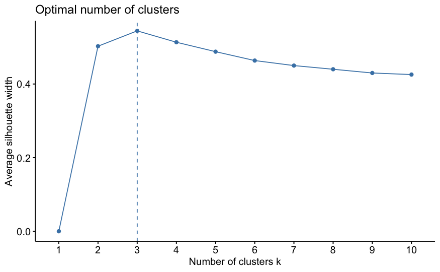
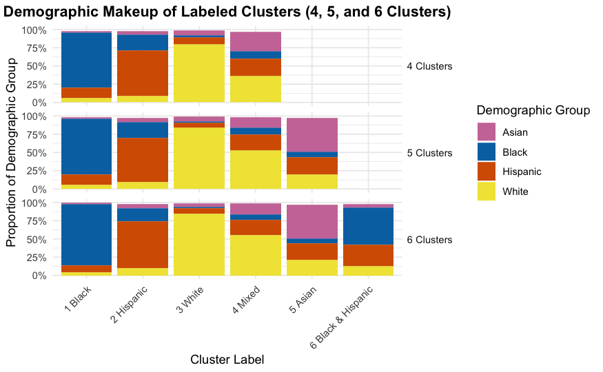
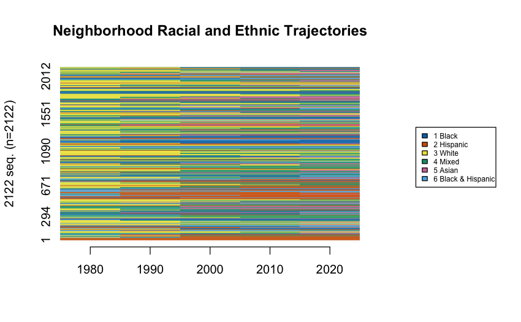
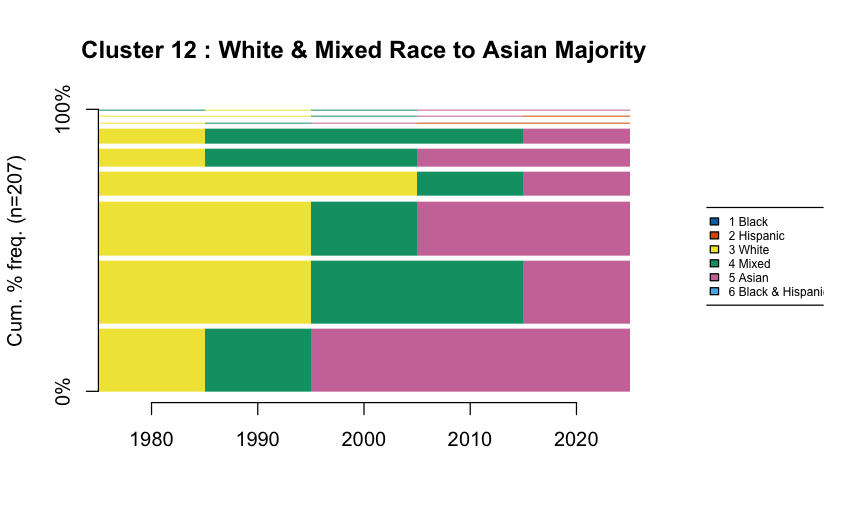
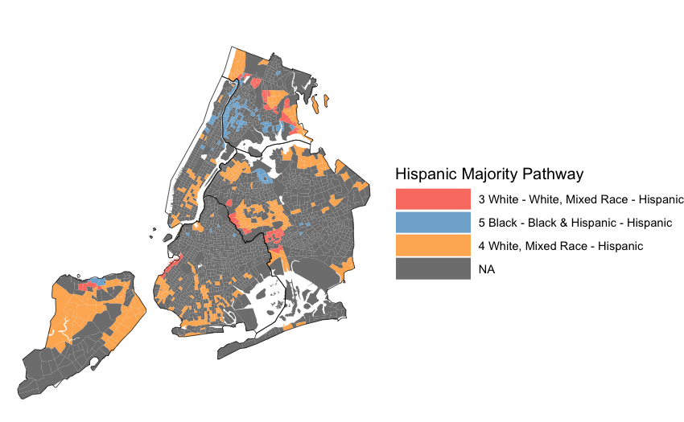

# Reshape to wide format (one row per tract)
census_wide <- census_data %>%
select(tract, year, cluster) %>%
pivot_wider(names_from = year, values_from = cluster)
# Define sequence object with TraMineR
seq_data <- seqdef(
census_wide,
var = c("1980", "1990", "2000", "2010", "2020"),
labels = c("White", "Black", "Hispanic", "Asian",
"Black/Hisp", "White Mixed")
)Mapping the DNA of Urban Neighborhoods
Sequential Analysis of Neighborhood Change
The very famous Dr. Elizabeth Delmelle
The Problem with Snapshots
Traditional neighborhood analysis:
What’s missing?
The full longitudinal sequence of change
Example: Did a neighborhood that’s “gentrifying” in 2010:
- Steadily improve from 1970?
- Decline, then recover?
- Cycle through ups and downs?
Why Sequences Matter for Policy
Neighborhood A
Stable → Declining → Struggling → Gentrifying
Intervention: Anti-displacement support, affordable housing preservation
Neighborhood B
Struggling → Struggling → Struggling → Gentrifying
Intervention: Infrastructure investment, longtime resident wealth-building
Same 2010 snapshot, completely different histories = different policy needs
The DNA Metaphor
Just like DNA sequences tell us about biological inheritance…
Neighborhood sequences tell us about:
- Patterns of change across metro areas
- Where different processes (decline, gentrification) occur spatially
- Racial and ethnic dynamics tied to socioeconomic change
- Which neighborhoods are “stuck” vs. volatile
- Whether Chicago School theories still apply
What We’ll Learn Today
A method to:
- Classify neighborhoods at multiple time points
- Create sequences for each neighborhood
- Measure similarity between sequences
- Cluster similar trajectories
- Map the results to see spatial patterns
The goal: Understanding neighborhood change as a process, not just snapshots
Research Context
Classic Urban Theories
Chicago School (1920s-1960s)
- Burgess: Concentric zones
- Hoyt: Sector model
- Harris & Ullman: Multiple nuclei
- Hoover & Vernon: Life cycle model
Predicted: Regular spatial patterns of neighborhood decline/renewal
Los Angeles School (1990s-2000s)
- Dear, Soja: Postmodern fragmentation
- No regular patterns
- Core doesn’t determine periphery
Predicted: Chaotic, unpredictable patterns
What Does the Data Show?

From Delmelle (2016)
Chicago: The Rings Persist
Chicago neighborhood trajectories, 1970-2010
Los Angeles: A Different Story
Los Angeles neighborhood trajectories, 1970-2010
Neighborhood Pathways Observed
Upgrading paths:
- Struggling → Young urban (gentrification in diverse areas)
- Blue collar → Young urban (densification)
- Suburban → Elite suburban (suburban improvement)
Declining paths:
- Suburban → Blue collar (ring of suburban decline)
- Blue collar → Struggling (continued decline)
- Most common: No change (stability at extremes)
The Methodological Workflow
Overview: 5 Main Steps
Methodological Workflow
Step 1: K-means Clustering
What is K-means Clustering?
K-means is an unsupervised machine learning algorithm that:
- Groups observations into k clusters based on similarity
- Assigns each observation to the cluster with the nearest mean (centroid)
- Iteratively updates cluster assignments and centroids until convergence
Why unsupervised? We don’t tell the algorithm what makes a “gentrifying” vs. “declining” neighborhood - it discovers patterns in the data
How K-means Works
The Algorithm:
- Initialize: Randomly place k centroids in the data space
- Assign: Each neighborhood → nearest centroid (Euclidean distance)
- Update: Recalculate centroid positions (mean of assigned points)
- Repeat: Until assignments stop changing (convergence)
Key feature: Partitions data into k non-overlapping groups
K-means for Neighborhoods
Input: Variables describing neighborhoods (all years combined)
- Socioeconomic: % college degree, unemployment, poverty
- Housing: Home value, owner-occupied, multi-unit structures, age
- Demographic: Recent movers, vacancy, seniors, children
Why standardize (z-score)? Compare relative position within metro over time
Key decision: Cluster all years together → ensures temporal consistency
The Art of Choosing K
Mathematical optimum ≠ Substantive optimum
From the tutorial: NYC analysis found optimal k=3, but used k=6
Why?
- k=3 groups: mostly White, mostly Black, mostly Hispanic
- k=6 provides nuance: mixed-race categories, diversity gradations
- More clusters = richer understanding of change pathways
- “More art than precise science” – from the tutorial
Evaluating Different K Values
Common metrics:
- Within-cluster sum of squares (WSS): Lower is better, always decreases
- Silhouette width: How well observations fit their cluster (0-1)
- Elbow method: Look for the “bend” in WSS plot
Tutorial approach: Test k=2 through k=10, examine fit AND interpretability
But ultimately: Choose k that makes theoretical sense and tells meaningful story
Example: Testing Multiple K Values
Where does adding more clusters stop improving fit dramatically?
Silhouette Plots

Examining Average Silhouette Values
Interpreting Cluster Results
Characteristics of 3 different clustering solutions
Step 2: Create Sequences
From Clusters to Sequences
Once each neighborhood is classified at each time point:
Before: Each tract has 5 separate cluster assignments
Tract 123: 1980=1, 1990=1, 2000=3, 2010=3, 2020=3After: Each tract has one sequence describing its trajectory
Tract 123: White → White → Hispanic → Hispanic → HispanicResult: Each neighborhood has a “signature” of change over time
Creating the Sequence Object
Visualizing All Sequences
Before clustering, visualize them:
All the sequences
Step 3: Measure Sequence Dissimilarity
The Challenge: How do we measure similarity between sequences?
Why Sequence Similarity Matters
Consider these three neighborhoods:
Neighborhood A: White → White → Hispanic → Hispanic → Hispanic
Neighborhood B: White → Hispanic → Hispanic → Hispanic → Hispanic
Neighborhood C: Black → Black → Black → Black → HispanicQuestion: Which two are most similar?
- A and B? (both go White → Hispanic)
- A and C? (both end Hispanic)
- B and C? (both have one transition)
Answer depends on: Do we care more about timing, endpoints, or sequence order?
Optimal Matching (OM) Algorithm
Classic approach - borrowed from DNA sequence analysis:
- Counts minimum “edits” to transform one sequence into another
- Operations: Insert, Delete, Substitute
- Costs: Based on how difficult/rare each transformation is
Problem: Traditional OM doesn’t emphasize ordering of transitions
OMstrans: Sequence-Aware Matching
From the tutorial: Use OMstrans (Optimal Matching of transitions)
- Focuses on the sequences of transitions, not just states
- Joins each state with its previous state (AB, BC, CD instead of A, B, C, D)
- Better captures the process of change
- More sensitive to the order in which transitions occur
Key difference: “White→Hispanic→Asian” ≠ “White→Asian→Hispanic”
OMstrans Example
Standard OM sees:
Sequence A: White, White, Hispanic, Hispanic, Hispanic
Sequence B: White, Hispanic, Hispanic, Hispanic, HispanicOMstrans sees:
Sequence A: White→White, White→Hispanic, Hispanic→Hispanic, Hispanic→Hispanic
Sequence B: White→Hispanic, Hispanic→Hispanic, Hispanic→Hispanic, Hispanic→HispanicWhy this matters: Captures when the transition happened (early vs. late)
Computing OMstrans Dissimilarity
# Calculate transition-based substitution costs
submat <- seqsubm(seq_data, method = "TRATE",
transition = "both")
# Compute OMstrans dissimilarity
dist_omstrans <- seqdist(
seq_data,
method = "OMstrans", # Note: OMstrans, not OM
indel = 1, # insertion/deletion cost
sm = submat, # substitution cost matrix
otto = 0.1 # origin-transition tradeoff
)Key parameter: otto (origin-transition tradeoff) - lower values emphasize sequencing
Understanding the Parameters
indel = 1: Cost for insertion/deletion operations
- Higher values = less time-warping allowed
- Tutorial uses 1 (half of max substitution cost)
otto = 0.1: Origin-transition tradeoff parameter
- Lower values = emphasize sequencing of transitions
- Tutorial uses 0.1 to prioritize order of change
norm = TRUE: Normalize distances by sequence length
- Ensures fair comparison across different-length sequences
Understanding the Cost Matrix
Substitution costs based on transition frequencies:
- Rare transitions = HIGH cost (e.g., Hispanic → Asian)
- Common transitions = LOW cost (e.g., White → White Mixed)
Inverse Transition Matrix for Costs
Intuition: Neighborhoods following rare pathways are dissimilar
The Dissimilarity Matrix
Output: Matrix of pairwise distances between all sequences
Tract1 Tract2 Tract3 ...
Tract1 0 2.4 5.1 ...
Tract2 2.4 0 4.8 ...
Tract3 5.1 4.8 0 ...Interpretation: Lower numbers = more similar trajectories
Next step: Use this matrix to cluster similar sequences
Step 4: Cluster Similar Sequences
From Distances to Clusters
We now have: Dissimilarity matrix (every sequence compared to every other)
We want: Groups of neighborhoods following similar trajectories
Solution: Hierarchical clustering using Ward’s method
Hierarchical Clustering Overview
How it works:
- Start with each sequence as its own cluster (n clusters)
- Find the two most similar clusters
- Merge them
- Repeat until all sequences are in one cluster
- Cut the dendrogram at desired number of clusters
Ward’s method: Minimizes within-cluster variance at each merge
Applying Hierarchical Clustering

Hierarchical Clustering Example
Choosing Number of Trajectory Clusters
Unlike k-means, no clear mathematical optimum
From tutorial approach:
- Start with many clusters (e.g., 20-30)
- Examine sequence plots for each
- Merge clusters if they show similar patterns
- Stop merging when you’d group opposite trajectories together
Example: Don’t merge “increasing White” with “increasing Hispanic”
The 14 NYC Trajectory Clusters
From the tutorial (1980-2020):
| Cluster | Description | n |
|---|---|---|
| 1 | Hispanic → Black & Hispanic | 102 |
| 2 | Stable (all types) | 537 |
| 3 | White → Hispanic | 243 |
| 4 | Hispanic → Asian | 60 |
| 5 | Black → White Mixed | 91 |
| … | … | … |
Most common: Stability (no change)
Visualizing Trajectory Clusters
Sequence frequency plots show the diversity within each cluster:
Width of bars = frequency of that specific sequence
Step 5: Map Results
Code Walkthrough
Let’s see how this works in R: download the tutorial
https://github.com/ericdelmelle/sequencePaper